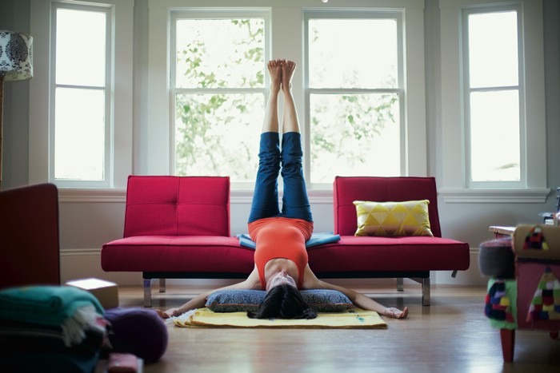

Wouldn’t you just love to be someone who regularly practises yoga at home, effortlessly? Here are some tips to help you get started.
- Create a comfortable spot for your yoga practice If you have an extra room that you can devote to your yoga, great! Having your yoga mat unrolled and out all the time is certainly inviting. Most of us, however, have to be more flexible and create a space when we want to practise. Try and find a spot where it's peaceful and quiet, with as much space around you as possible. An empty piece of wall can be handy too since the wall is a great prop. If you like, it can be nice and even helpful to create some atmosphere with a candle or an incense stick. Things like candles and incense are just extras, and by no means necessary to practise yoga. You can do yoga anywhere as long as you have enough space around you without the risk of bumping into tables, chairs, etc. I've practised in the living room with my husband there, having his breakfast and reading the paper, even commenting now and then. Not ideal, but I still got my practice in, which is the most important message of this article. So be creative and get on your mat no matter what! Create the best space you can and enjoy your practice!
- Get your yoga accessories All you really need is a yoga mat, preferably non-slip. The yoga mat market is huge but it's worth paying a little more for a good quality mat that suits your needs and will last a long time. Blocks are a great addition but they can be replaced with books and other household things. A bolster is also nice to have, but for years I used a stack of pillows and blankets instead.
